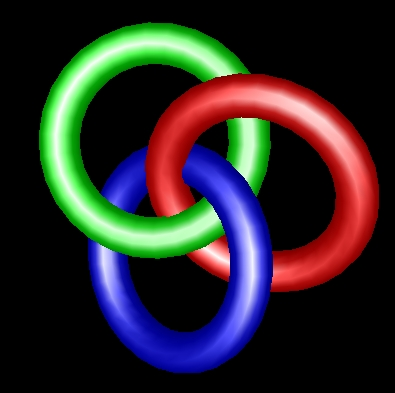

|
 |
| Each ring is submitted/rendered by a separate client in a cluster-parallel program. |
Parallel rendering is characterized by more two or more programs (or threads) simultaneously sending graphics commands to the rendering system. Typically, each process (or thread) will render a part of the entire model or scene. The pieces are combined at some point to form the final image.
When rendering very large, complex models the bottleneck may be in submitting graphics commands to the rendering system. Parallel rendering tries to overcome that bottleneck.
Here we describe parallel rendering with Chromium by using a trivial
program called psubmit.
Writing a parallel OpenGL application is pretty simple. You have a bunch of processes, each one of which is responsible for a portion of the model to be rendered. Each process renders its portion pretty much as if it were the only process in the world. The partial renderings may either be composited together according to Z or alpha (sort-last) or tiled together (sort-first). However, ordering requirements add some complexity to the process.
OpenGL provides ordered semantics. That means that if function A is called before function B, the resulting image should look as if A happened before B. With parallel programs it's no longer clear which function is getting called first. Therefore, if you aren't using the depth test (for example), and you draw two overlapping triangles in parallel, you don't know which one will appear on top. To get around this problem, Chromium implements the parallel API proposed by Igehy, Stoll and Hanrahan in SIGGRAPH '98. This API extends OpenGL to have barriers and semaphores, which are sufficient to express almost all ordering constraints that come up in graphics.
Let's take a look at the main function of psubmit.c
in cr/progs/psubmit. The first thing this function does is
determines how many of its peers exist, and which instance number (starting from
0) this particular main is running in. In psubmit,
this is done with command line arguments, although more complex programs will
probably need to do some sort of application-level communication or
synchronization and would get this information from, say, MPI.
Once the rank and size of the program are determined, the following two lines appear:
| context = crCreateContextCR(dpy, visual); crMakeCurrentCR(window, context); |
crCreateContextCR and crMakeCurrentCR are actually function pointers
initialized via crGetProcAddress.
The typedefs for these functions are in the header file
"chromium.h".
They provide a mechanism to use Chromium without using GLX or WGL and
having to create applications windows, etc.
This is particularly useful for parallel applications, since it doesn't
really make sense to have a bunch of blank faked-out windows popping up
all over the cluster. This also means that the client nodes in the
cluster do not have to have a graphical environment running just to house
a blank faked-out window.
The dpy, visual and window
parameters are initialied earlier in the function.
The next thing that the application does is create a GL barrier:
| glBarrierCreateCR( MASTER_BARRIER, size ); |
Notice that every node in the cluster will create this barrier. This is
perfectly legal, as long as the "size" parameter matches up. MASTER_BARRIER
is just an integer that "names" this barrier, much like an OpenGL
display list or texture object (except that the namespace is shared between
clients by default).
After some GL initialization code comes the main drawing loop. This application follows the basic format of all simple parallel OpenGL applications. The basic structure of the code is:
for (frame = 0; ; frame++)
{
if (clearFlag)
glClear( GL_COLOR_BUFFER_BIT | GL_DEPTH_BUFFER_BIT );
glBarrierExecCR( MASTER_BARRIER );
draw the scene here
glBarrierExecCR( MASTER_BARRIER );
if (swapFlag)
crSwapBuffersCR( window, 0 );
else
crSwapBuffersCR( window, CR_SUPPRESS_SWAP_BIT );
}
|
A few things to note about this code:
clearFlag is set by the -clear command
line option.
swapFlag is set by the -swap command line
option.
CR_SUPPRESS_SWAP_BIT flag is used in sort-last
configurations to mark the end of the frame without actually swapping the
buffer.
clearFlag is set by
all clients and swapFlag will be set only for the zeroth
client.
clearFlag and
swapFlag will be set only for the zeroth client.
glBarrierExecCR (also declared in chromium.h)
is the call to enter a barrier.There are two sample parallel submission configuration scripts included with Chromium. psubmit_first.conf demonstrates parallel sort-first rendering with the tilesort SPU. psubmit_last.conf demonstrates parallel sort-last rendering with the readback SPU.
To run the psubmit_first demo you'll need to issue the following commands, probably from five separate shell windows:
cd mothership/configs ; python psubmit_first.conf
crserver
crserver
crappfaker
crappfaker
To run the psubmit_last demo you'll need to issue the following commands, probably from four separate shell windows:
cd mothership/configs ; python psubmit_last.conf
crserver
crappfaker
crappfaker
Among the difficulties in writing parallel applications are dealing with user input events and window management. Suppose you want to implement interactive rotation in your parallel application. Since there are N client/application windows, mouse movement events that are detected in one window should be duplicated in all the other windows. Otherwise only part of the rendering will be rotated. Similarly, if one window is resized, they should all be resized.
At this time there is no simple solution to this problem. But looking forward, there are plans to develop a toolkit similar to GLUT, tentatively called CRUT (Chromium Utility Toolkit). With CRUT, input events and window changes will be automatically sent to all peers in a parallel application. For more information, try asking on the Chromium developers mailing list.